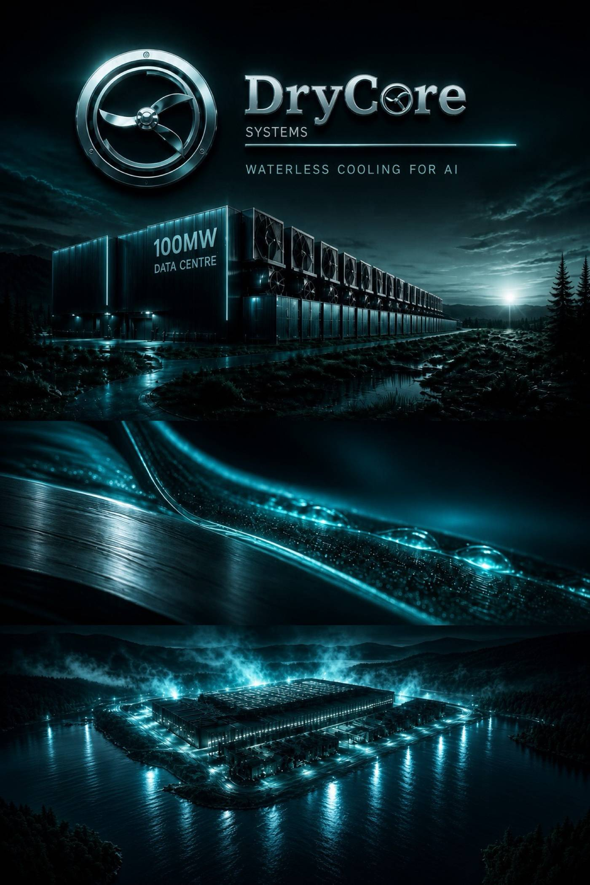
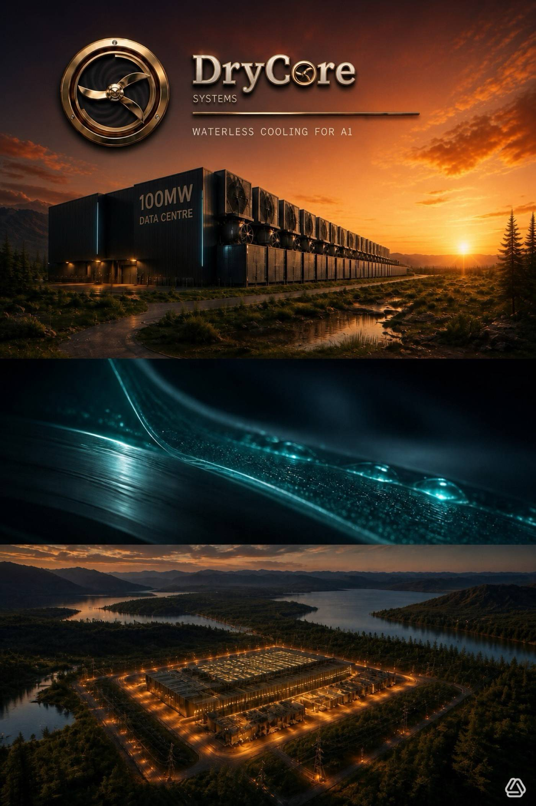

DRY
DRYThe collision
Three constraints. One site decision.
An AI data center has to move an enormous amount of heat out of the building, continuously. The usual answers now collide with water, the grid, and the community that has to live next to the plant.
01
Water
Evaporative rejection can draw hundreds of thousands to millions of gallons a day at scale, often in regions already short of it. That draw is now a permitting problem, not only a utility line item.
02
Hot-day energy
A sealed dry loop solves the water problem and pays for it in fan and compressor energy on the hottest afternoons — when the grid is tightest and the cost is highest.
03
Permission to build
Water draw and noise are the objections that delay and block new sites. A machine that cannot be sited does not cool anything.


↔
Design intent
A campus that does not drink the watershed.
These are concept studies, not photographs of an operating DryCore plant. They fix the picture we are building toward: heat rejected at the building line, a closed loop, and a site that can sit beside water without consuming it.
Drag the divider. Warm study and night study, same architecture.
What we are building
Three design targets. No published performance yet.
DryCore is developing a closed-loop heat-rejection system aimed at zero water consumption, lower energy per watt of heat rejected in high ambient temperatures, and low enough noise to ease siting.
The core mechanism is being validated on an instrumented bench cell, against pass and fail thresholds published before the first run. No performance figures appear here, because none have been measured yet.
01
Inside the hall
Heat leaves the IT load on a closed circuit. Water is not the working fluid that disappears into the air.
Heat leaves the IT load on a closed circuit. Water is not the working fluid that disappears into the air.
02
At the wall
Rejection is designed to hold efficiency when ambient temperature is highest — the hour dry coolers usually surrender.
Rejection is designed to hold efficiency when ambient temperature is highest — the hour dry coolers usually surrender.
03
At the fence
Acoustic load is a design target, because community opposition is now part of the thermal problem.
Acoustic load is a design target, because community opposition is now part of the thermal problem.
Who is building it
Klifton Finley
Founder and chief executive
Seventeen years in industrial extraction — designing, operating, and training teams on closed-loop hydrocarbon and CO₂ pressure systems inside classified hazardous-location facilities, under state licensing and inspection. The same discipline a refrigerant machine lives under.
Company page →For capital
A gate, not a story.
The recommended path is non-dilutive validation first, then capital sized to a measured bench, then a pilot conversation. Dilution follows pass/fail thresholds, not a slide.
Open the investor page